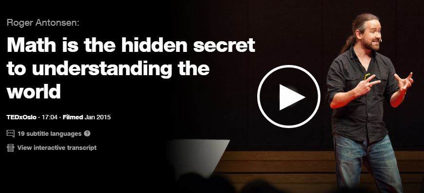
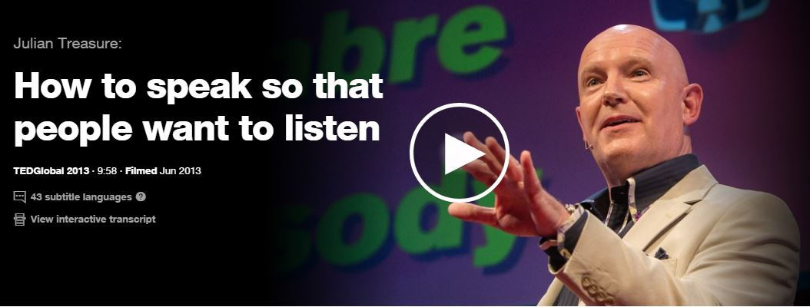

Roger Antonsen teaches us that when communicating ideas, you may need to change your perspective or lens.
Roger Antonsen teaches us that when communicating ideas, you may need to change your perspective or lens.

Julian Treasure teaches us how to speak with authenticity and encourage coaxes others to listen.
Julian Treasure teaches us how to speak with authenticity and encourage coaxes others to listen.
Recommended Books
Field Guide